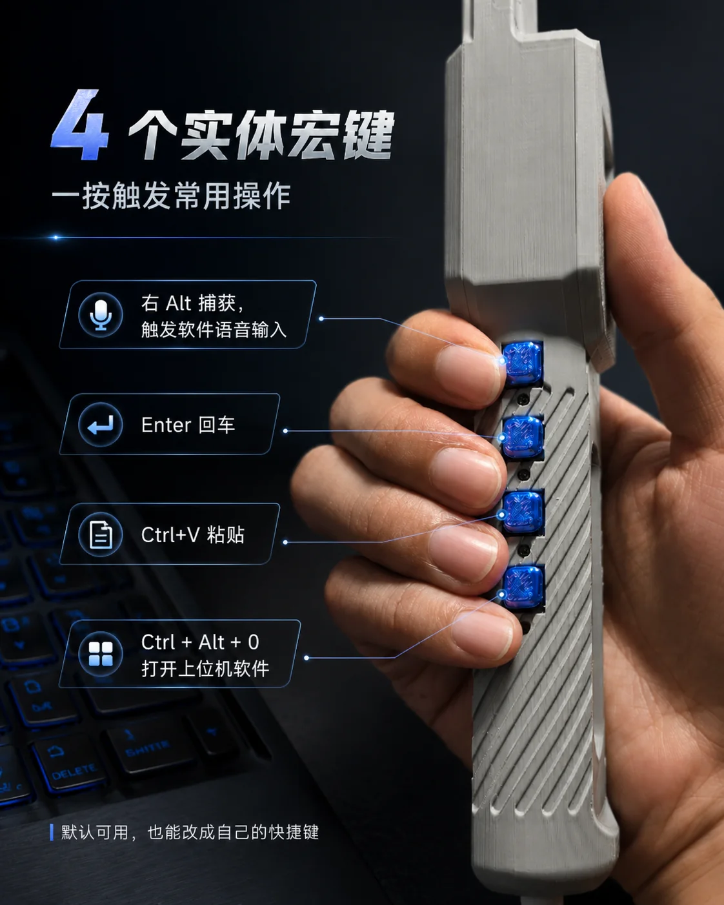

复制一句话配置提示词
推荐给已有大模型 Agent 的用户：粘贴一次，让 Agent 自动安装 Skill，并完成软件、Hook、设备和按键检查。
查看支持的 Agent 与完整安装方式 →QUICK START 有 Agent，先让 Agent 替你完成
如果你正在使用 Codex、Claude Code、Gemini CLI 或其他 Agent，请优先复制第一张卡片的提示词。Agent 会安装 ZKO Skill，并继续检查 AutoClipboard、Hook、手柄型号和按键配置；通常不需要你先手动下载安装包。
推荐给已有大模型 Agent 的用户：粘贴一次，让 Agent 自动安装 Skill，并完成软件、Hook、设备和按键检查。
查看支持的 Agent 与完整安装方式 →备用方式：AutoClipboard · 自动推荐 Windows、macOS 或 Linux
Windows 推荐下载（Gitee） 其他系统、备用源与历史版本 →让 Codex 帮你检查 CC-Switch、模型供应商和连接状态；真实 API Key 始终由你在本机填写。
推荐顺序：有 Agent → 复制第一条提示词；没有 Agent → 再手动下载。提示词只会写入剪贴板，不会读取或上传 API Key。
PLAYER_01 ZKO AI CODING HANDLE
实体确认、语音输入、宏键控制和 Agent 状态反馈，装进一只专为 Vibe Coding 打造的控制手柄。
麦克风仅作搭配示意，不随产品销售；图中白色 ZKO 标志为视觉合成，不代表该麦克风由 ZKO 生产。
> DEVICE ONLINE
> MODE AGENT CONTROL
> STATUS WAITING FOR COMMAND
AI, MADE PHYSICAL.
字库把确认、语音、快捷动作和 Agent 的下一步，从屏幕深处带到桌面上。少一点界面切换，多一点连续创作。
QUEST LOG 选择你的工作方式
每一项能力都服务于同一件事：让人和 Agent 之间的协作更直接、更连续，也更有触感。
QUEST 01
QUEST 02
QUEST 03
QUEST 04
ITEM CODEX 产品图鉴
像素 UI 负责讲故事，实拍图负责交代结构、按键和屏幕细节。


START ROUTE 三步开局
USB 或蓝牙连接设备，确认小屏进入待机界面。
自动推荐当前系统，也可手动选择 Windows、macOS 或 Linux 安装包。
让 Codex 或其他 Agent 自动检查软件、Hook 与按键映射。
DOWNLOAD STATION AUTOCLIPBOARD / MULTI-OS
自动识别 Windows、macOS 或 Linux，国内用户优先使用 Gitee；全部平台仍可手动选择。